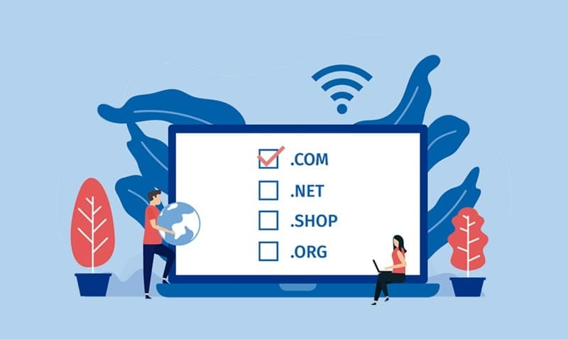
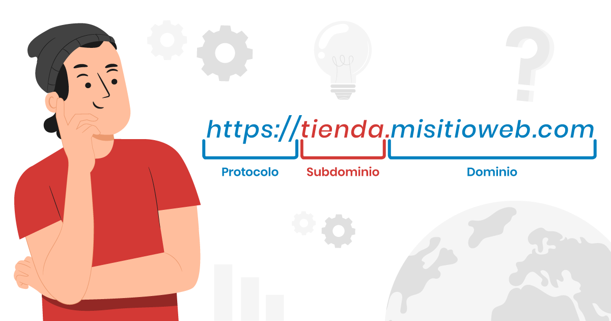

¿Qué es un Dominio?
Un dominio es la dirección única que identifica a un sitio web en internet. Es el nombre que los usuarios escriben en la barra de direcciones de su navegador para acceder a un sitio específico. Por ejemplo, el dominio de Google es "google.com".
¿Qué es un Subdominio?
Un subdominio es una extensión de un dominio principal. Los subdominios se utilizan para organizar y navegar por diferentes secciones de un sitio web. Por ejemplo, en el dominio "blog.ejemplo.com", "blog" es el subdominio del dominio principal "ejemplo.com".
Ventajas de usar subdominios
- Organización de contenido.
- Facilita la navegación en grandes sitios web.
- Permite separar secciones, como tienda, blog, soporte, etc.